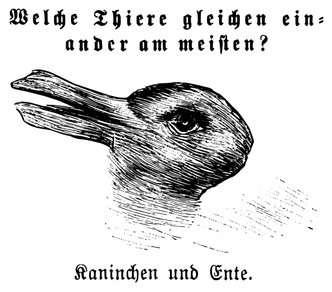

2 Bayesian inference
This chapter reviews some basic probability and Bayesian inference. You might be asking yourself: What does this have to do with psychology? The answer becomes clear when you recognize that most of what we do when we’re making sense of the world is drawing inferences. When you see an ambiguous image like the one below, is it a rabbit or a duck? When someone mumbles something, did they say “hello” or “go to hell”? When you take a pill and your headache goes away, did the pill eliminate your headache or did the headache go away on its own?

In all of these examples, there is more than one hypothesis about what we observed. Probability and Bayesian inference provide the tools for optimally determining how probable these different hypotheses are. One of the claims of this book is that when people are making inferences in situations like these, their inferences are often well predicted by the optimal inferences dictated by probability theory.
2.1 Basic probability 🎲
- Conditional probability: \(P(b|a) = \frac{P(a,b)}{P(a)}\)
- Chain rule: \(P(a,b) = P(b|a)P(a)\)
- Marginalization: \(P(d) = \sum_h P(d,h) = \sum_h P(d|h) P(h)\)
- Bayes’s rule: \(P(h|d) = \frac{P(d|h) P(h)}{P(d)} = \frac{P(d|h) P(h)}{\sum_h P(d|h) P(h)}\). \(P(d|h)\) is referred to as the likelihood, \(P(h)\) is the prior, and \(P(h|d)\) is the posterior.
2.2 A motivating example: Sampling from a bag 👝
Suppose you have a bag full of black and red balls. You can’t see inside the bag and you don’t know how many black and red balls are inside, but you know that there are nine total balls in the bag.
You want to know how many black balls and red balls there are. There are a finite number of hypotheses: {0 black balls, 1 black ball, 2 black balls, …, 9 black balls}. Let’s call these hypotheses \(B_0\), \(B_1\), etc., respectively.
You don’t know which hypothesis is true, but you might have some idea that some hypotheses are more likely than others. It’s natural to represent your uncertainty with a probability distribution over the possible unknown states that the world could be in – in this case, the ten hypotheses. Each hypothesis gets assigned a probability and the probabilities sum to 1.
For starters, let’s assume that you don’t have any idea which hypotheses are more likely. In other words, you give every hypothesis the same probability: 1/10 = 0.1. This is called a uniform distribution over hypotheses. This distribution is your prior.
Now suppose you put your hand in the bag and pull out a ball at random. The possible observations are: {black, red}, Let’s call them \(B\) and \(R\), respectively. The probability of observing each color depends on which hypothesis is true, i.e., how many balls of each color are in the bag. For instance, if \(B_0\) is true (there are 0 black balls in the bag), then the probability of observing a red ball is 1 (\(P(R|B_0)=1\)), and the probability of observing a black ball is 0 (\(P(B|B_0)=0\)). These expressions that tell us how probable our observations are, given a specific hypothesis, are your likelihoods.
2.2.1 Sampling from the generative model
Now we have a distribution over hypotheses (a prior), \(P(h)\), and a distribution over observations given each hypothesis (a likelihood), \(P(d|h)\). These two things allow us to create a generative model, a model for sampling new data.
How do we sample from the generative model? Note that which hypothesis \(h\) is true does not depend on the data, while the data \(d\) depends on which hypothesis is true. Therefore, we can sample from the generative model using the following two-step process:
- Sample a hypothesis from the prior.
- Sample data given the hypothesis, using the likelihood.
Let’s first create an array with the probability of each hypothesis:
Throughout this book, you will be able to run the code yourself by clicking the “Run Code” button. If you want, you can also edit the code to see what happens. Run the code below by clicking “Run Code”.
Now we’ll do the first step: create an array of 10000 hypotheses sampled from the prior:
The code blocks in each chapter are dependent on each other, so you must run them all, in order, or you will get an error.
Here, each number corresponds to one hypothesis: 0 corresponds to \(B_0\), 1 to \(B_1\), and so on. Each sample represents one possible way (a hypothesis) the world could be. Since the prior was uniform (each hypothesis had the same probability), each hypothesis appears about equally often. We can plot all the samples to verify:
Now for the next step. For each sample in prior_samples, we want to sample an observation. To do that, let’s pause for a second and think about the probability of pulling a black ball given that hypothesis \(B_3\) is true, for example. This means that there are 3 black balls and 6 red balls in the bag. So the probability of pulling a black ball from the bag at random will be 3/9.
Generalizing this idea, we can get the probability of pulling a black ball from the bag by dividing the elements of prior_samples by 9:
Now, to complete our generative model, we just need to sample one value for each element of p_black. Each sample represents a draw from a bag.
ball_samples is 1 for black and 0 for red. Once again, let’s plot all our samples.
You can think of this plot representing your overall beliefs about the number of red and black balls in the bag, averaged over all possible hypotheses.
Not surprisingly, we got about equal numbers of red and black balls. This makes sense: We didn’t have any prior expectations about whether red or black balls were more likely in the bag.
How should your beliefs change after you pull a ball out of the bag? That is, how should you respond to evidence?
2.3 Bayesian updating: Learning from evidence 🤔
Let’s apply Bayes’s rule to see how to optimally incorporate new data into your beliefs.
2.3.1 Applying Bayes’s rule to the bag case
Suppose you have a uniform prior distribution over the 10 hypotheses about balls in the bag. Now you pick a ball and it’s black. Given this observation \(B\), how should you change the probabilities you give to each hypothesis?
Intuitively, you should now give a little bit more probability to those hypotheses that have more black balls than red balls, because those are the hypotheses that make your observations more likely. Moreover, you can definitively exclude hypothesis \(B_0\), because your observation would be impossible if \(B_0\) were true. Let’s calculate this with Bayes’s rule.
The prior is the array h_priors defined above. Given that we have observed \(B\), the likelihood should tell us, for each hypothesis, the probability of \(B\) given that hypothesis. For example, for \(B_9\), the likelihood \(P(B|B_9) = 1\). For \(B_8\), \(P(B|B_8) = 8/9\), because 8 of the 9 balls are black.
Generalizing this idea, \(P(B|B_n) = n/9\). We can therefore compute the likelihoods for all hypotheses in a vector:
Now suppose we want to find the probability of hypothesis \(B_5\) after observing one draw \(B\). Let’s apply Bayes’s rule:
\[P(B_5 | B) = \frac{P(B|B_5) P(B_5)}{\sum_h{p(B|h) P(h)}}\]
Let’s compute the parts we need to calculate \(P(B_5 | B)\).
Let’s update the probabilities for all hypotheses in a more compact way.
As expected, Bayes’s rule says we should increase the probability we assign to hypotheses with more black balls than red balls. Additionally, let’s double-check that the posterior probabilities sum to 1 (a requirement for a valid probability distribution).
Finally, let’s plot the posterior probabilities.
2.3.2 How to avoid calculating P(d)
In practice, we generally do not need to calculate the \(P(d)\) (the denominator in Bayes’s rule) explicitly. I’ll give you the general idea why in this section.
First, we create an array of prior probabilities, which has as many components as there are hypotheses. We’ll just reuse h_priors. Note that the probabilities sum to 1, as they should because it’s a probability distribution.
Next, we create a likelihood array. When we did calculations above, we only had an array with the likelihoods for a specific observation. However, we would like to have something that encodes the likelihood function for each possible observation given each possible hypothesis, rather than just for a specific observation.
In this example, there are two possible observations: \(B\) and \(R\). We can encode the likelihood as an \(m \times n\) array where \(m\) is the number of hypotheses and \(n\) is the number of possible observations. In our case: \(10 \times 2\).
Now we multiply the prior and likelihoods together (the numerator of Bayes’s rule) element-wise (first element gets multiplied with first element, second element by second element, etc.):
Finally, we want a distribution for each column, i.e., a distribution over hypotheses given each observation. Therefore, we sum each column and then divide each element by the sum of its column:
And that gives us the posterior without us having to explicitly calculate the evidence for each observation!
The general idea is this. Because the denominator of Bayes’s rule, for a fixed observation, is a constant, you can usually get away with computing \(P(d|h) P(h)\) for every possible hypothesis \(h\) and then “normalize” the resulting values so that they sum to 1 (remember that they have to in order for it to be a valid probability distribution).
2.4 Exercises 📝
2.4.1 Taxi cabs
80% of the taxi cabs in Simpletown are green and 20% are yellow1. A hit-and-run accident happened at night involving a taxi. A witness claimed that the taxi was yellow. After extensive testing, it is determined that the witness can correctly identify the color of a taxi only 75% of the time under conditions like the ones present during the accident. What is the probability that the taxi was yellow?
2.4.2 Flipping coins
You observe a sequence of coin flips and want to determine if the coin is a trick coin (always comes up heads) or a normal coin. Let \(P(\text{heads}) = \theta\). Let \(h_1\) be the hypothesis that \(\theta = 0.5\) (fair coin). Let \(h_2\) be the hypothesis that \(\theta = 1\) (trick coin).
For this problem, we will define something called prior odds, which is the ratio of prior probabilities assigned to two hypotheses: \(\frac{P(h_1)}{P(h_2)}\). Because most coins aren’t trick coins, we assume that \(\frac{P(h_1)}{P(h_2)} = 999\), indicating a very strong (999 to 1) prior probability in favor of fair coins. We can now compute the posterior odds, the ratio of posterior probabilities for the two hypotheses after observing some data \(d\): \(\frac{P(h_1|d)}{P(h_2|d)}\).
Compute the posterior odds after observing the following sequences of coin flips:
- HHTHT
- HHHHH
- HHHHHHHHHH
2.5 Solutions
2.5.1 Taxi cabs
Let \(h_1\) be the hypothesis that the taxi is yellow. Let \(h_2\) be the hypothesis that the taxi is green. Let data \(d\) be the witness report that the taxi was yellow. Given the problem statement, \(P(h_1) = 0.2\) and \(P(h_2) = 0.8\). The witness is only accurate 75% of the time, so \(P(d|h1) = 0.75\) (the witness saw a yellow taxi and correctly identified it) and \(P(d|h2) = 0.25\) (the witness saw a green taxi but identified it as yellow). Now we apply Bayes’s rule:
\[\begin{align} P(h_1|d) &= \frac{P(d|h_1) P(h_1)}{P(d)} \\ &= \frac{P(d|h_1) P(h_1)}{P(d|h_1) P(h_1) + P(d|h_2) P(h_2)} \\ &= \frac{(0.75) (0.2)}{(0.75)(0.2) + (0.25)(0.8)} \approx 0.43 \end{align}\]
Because yellow cabs are rare (have low prior probability), it is actually more probable that the cab was green, even though the witness is 75% accurate.
2.5.2 Flipping coins
HHTHT
\[ \begin{align} \frac{P(h_1|d)}{P(h_2|d)} &= \frac{P(d|h_1)}{P(d|h_2)} \frac{P(h_1)}{P(h_2)} \\ &= \frac{(1/2)^5}{0} \times 999 = \inf \end{align} \] This sequence isn’t even possible under \(h_2\) so we have infinite evidence in favor of \(h_1\).
HHHHH
\[ \begin{align} \frac{P(h_1|d)}{P(h_2|d)} &= \frac{P(d|h_1)}{P(d|h_2)} \frac{P(h_1)}{P(h_2)} \\ &= \frac{(1/2)^5}{1^5} \times 999 = 31.2 \end{align} \]
This sequence favors \(h_1\) by a factor of about 31. Even five heads in a row can’t overcome our strong prior favoring \(h_1\).
HHHHHHHHHH
\[ \begin{align} \frac{P(h_1|d)}{P(h_2|d)} &= \frac{P(d|h_1)}{P(d|h_2)} \frac{P(h_1)}{P(h_2)} \\ &= \frac{(1/2)^{10}}{1^{10}} \times 999 = 0.98 \end{align} \]
Now the evidence favors \(h_2\) (trick coin) just barely.
After the protracted and aptly named “color wars” of 2113-2114, the previously dominant (and ruthless) orange cabs were wiped from existence. For the purposes of this problem, you may ignore them.↩︎